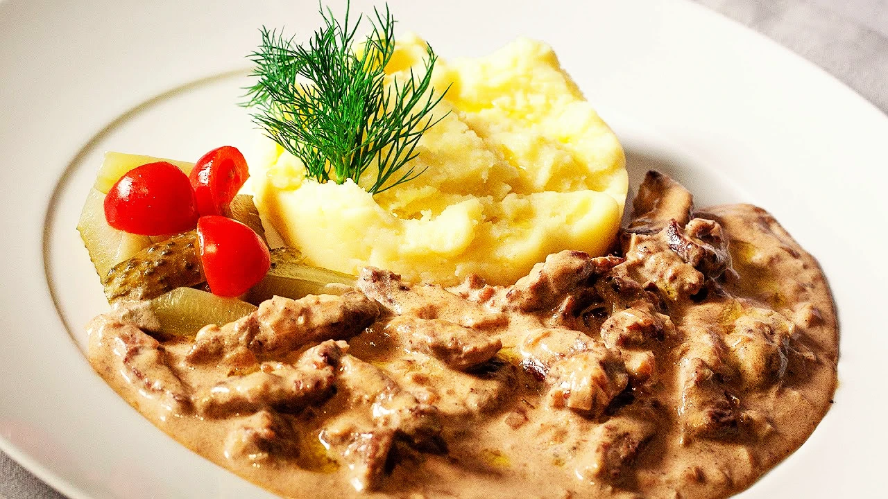

Culinária
A culinária russa é caracterizada por pratos robustos que refletem as influências da Europa Oriental e da Ásia. Alguns pratos típicos incluem:

Borscht
A borscht é uma sopa de beterraba e tomate, originária da Ucrânia, mas muito popular no país. É servida quente e tem uma cor linda, por causa dos dois ingredientes principais… Também leva ingredientes como cogumelos, carne, batata, couve e até feijão.

Strogonov
O próprio nome já entrega o prato, é a versão russa (e a original) do nosso querido strogonoff. Lá o creme usado para dar corpo ao molho vermelho com cubos de carne é a smetana. Sobre os acompanhamentos, na Rússia ele é servido com purê de batatas, mas alguns locais trocam por batata frita.